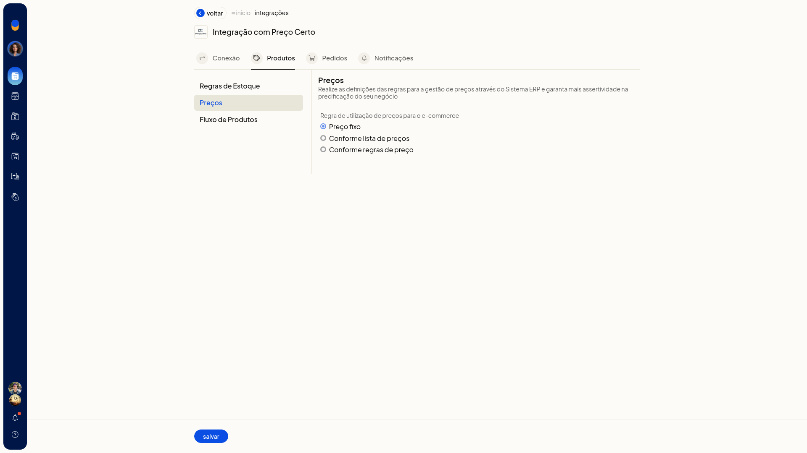
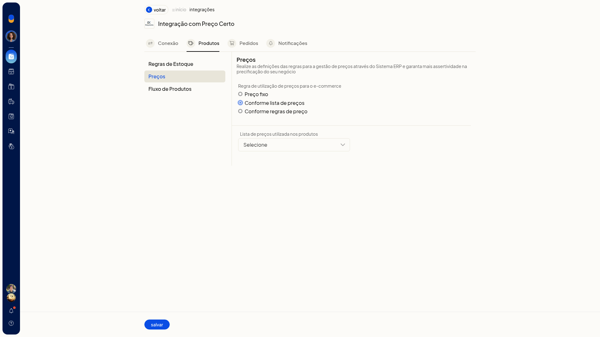
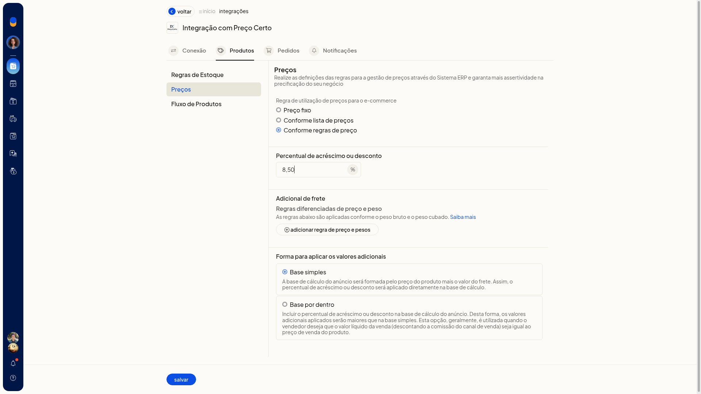
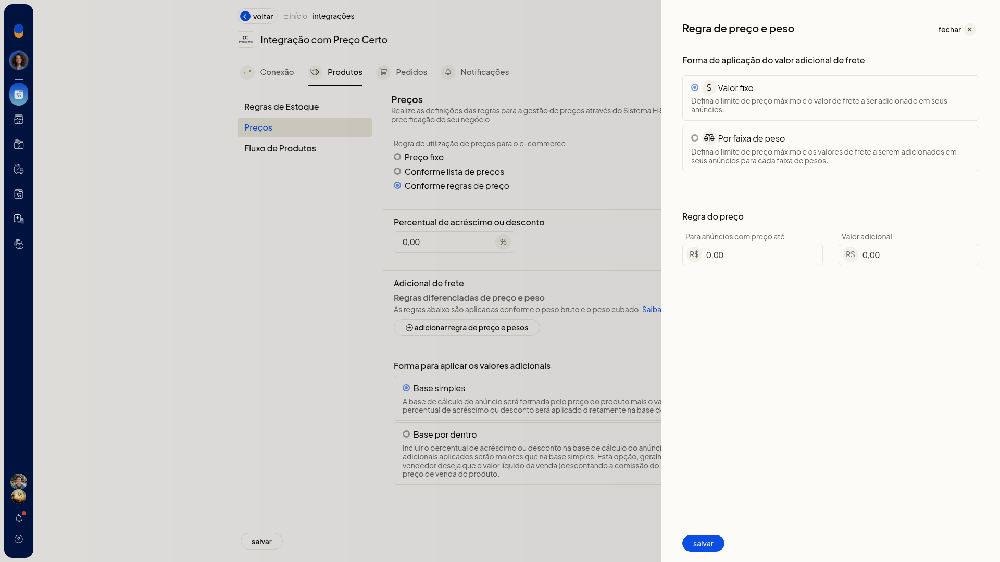
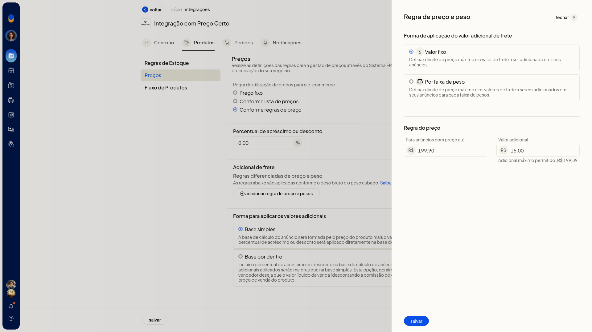
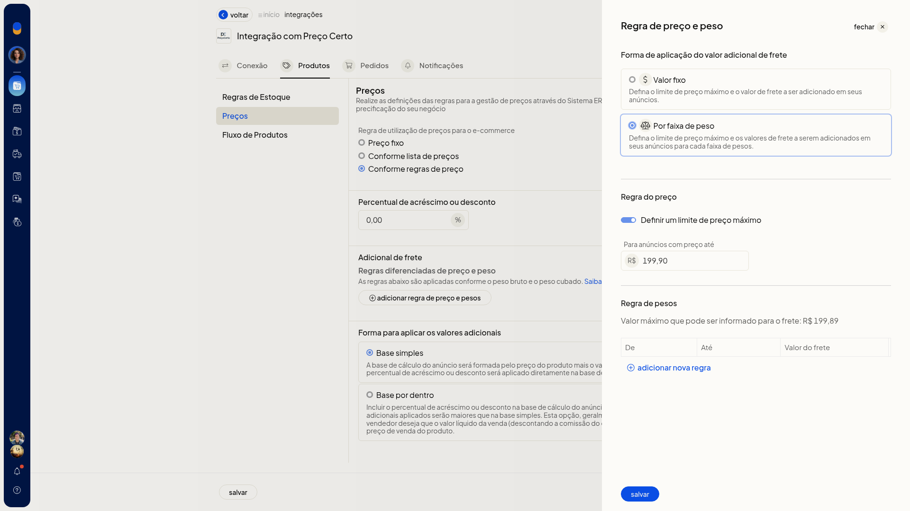
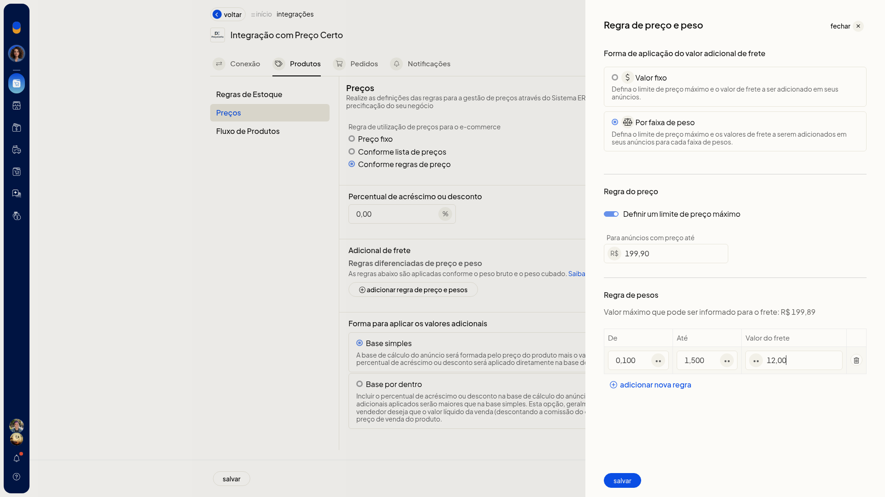

Regras de preço para e-commerce
Importante
- No adicional de frete, a tela mostra um adicional máximo permitido inferior ao limite de preço informado.
Instruções
- Acesse Integração com Preço Certo > Produtos > Preços.
- Em Regra de utilização de preços para o e-commerce, selecione Preço fixo, Conforme lista de preços ou Conforme regras de preço.
Preço fixo
- Selecione Preço fixo. Essa opção não exibe campo adicional.

- Clique em Salvar.
Conforme lista de preços
-
Selecione Conforme lista de preços.
-
Em Lista de preços utilizada nos produtos, selecione uma lista já cadastrada na conta.

-
Clique em Salvar.
Conforme regras de preço
-
Selecione Conforme regras de preço.
-
Informe o Percentual de acréscimo ou desconto com vírgula decimal.

-
Em Forma para aplicar os valores adicionais, selecione Base simples ou Base por dentro.
- Base simples: a base do anúncio é o preço do produto mais o frete, e o percentual incide direto nessa base.
- Base por dentro: o percentual entra na base, e os adicionais ficam maiores do que na base simples.
-
Em Adicional de frete, clique em Adicionar regra de preço e pesos.
-
No modal Regra de preço e peso, selecione Valor fixo ou Por faixa de peso.
Valor fixo
-
Selecione Valor fixo.

-
Informe Para anúncios com preço até e Valor adicional. Use o adicional máximo mostrado na tela como limite do Valor adicional.

Por faixa de peso
-
Selecione Por faixa de peso.

-
Para limitar o preço, marque Definir um limite de preço máximo e informe o limite.
-
Clique em adicionar nova regra.
-
Informe De e Até em kg e o Valor do frete em reais.

-
Clique em Salvar.